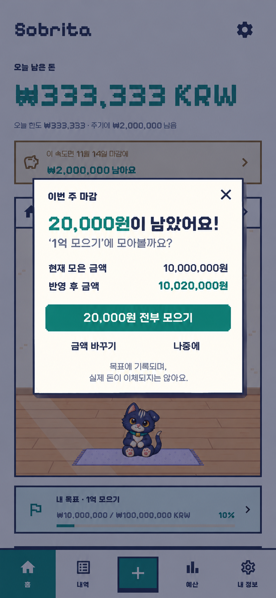
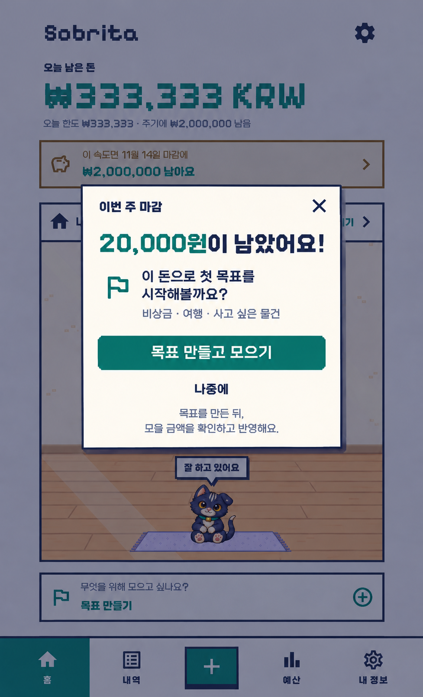
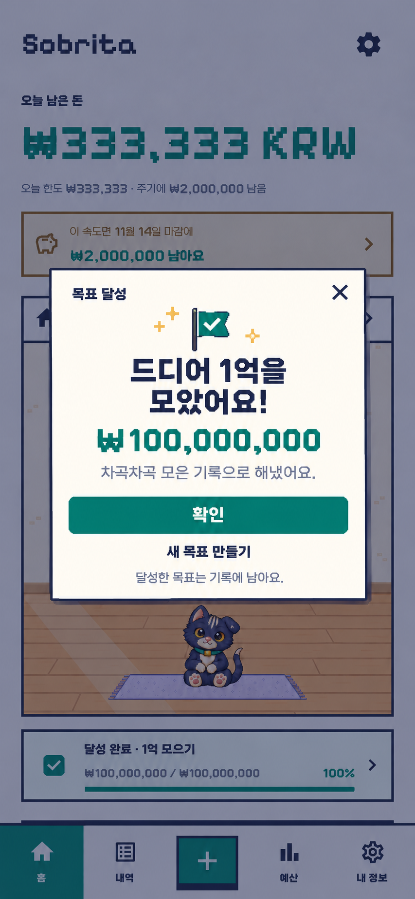

남은 생활비를 목표에 모으기
주기 마감 후 한 번 보여주는 팝업입니다. 기존 홈과 캐릭터 방을 유지하고, 목표 설정 여부에 따라 다음 행동을 바꿉니다.
목표가 있을 때

전부 모으기를 누르면 10,000,000원에서 10,020,000원으로 갱신합니다. 금액 바꾸기와 나중에도 선택할 수 있습니다.
목표가 없을 때

목표 만들기 → 금액 확인 → 반영 순서입니다. 나중에를 누르면 마감 기록을 유지하고 기존 목표 만들기 카드로 돌아갑니다.
목표를 달성했을 때

축하 팝업을 한 번 보여주고 홈에 달성 완료 카드를 유지합니다. 새 목표는 사용자가 원할 때 만들며, 달성한 목표는 기록에 보관하는 흐름입니다.
내장 이미지 생성 도구로 만든 구현 전 시안입니다. 실제 이체나 사용자 데이터 변경은 없습니다. 동작 설명과 생성 기록